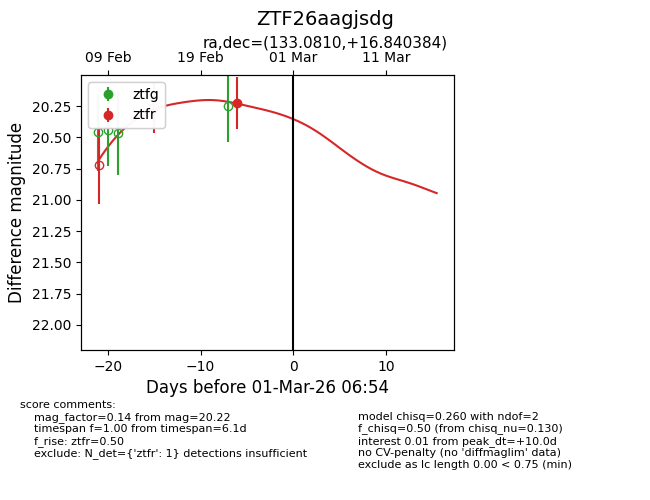
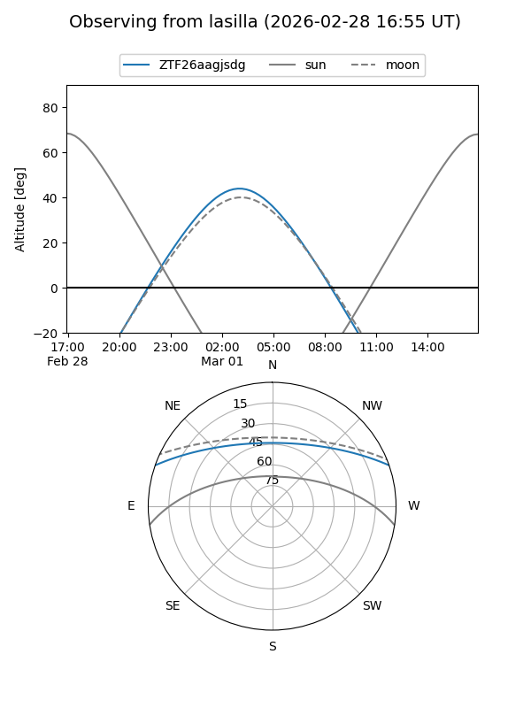
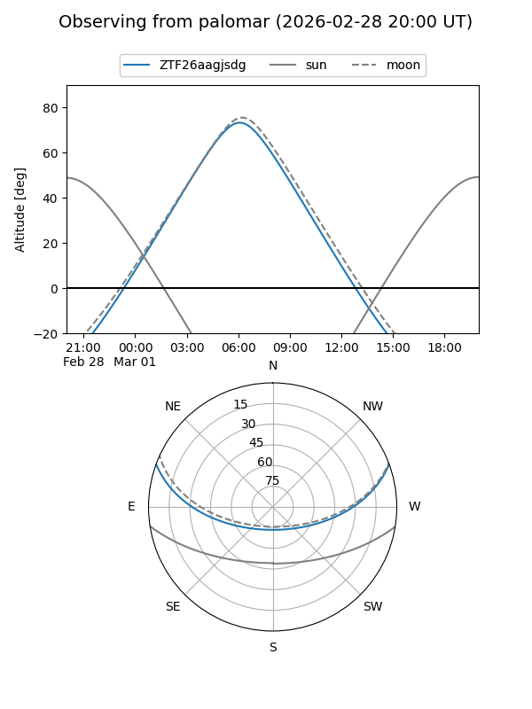
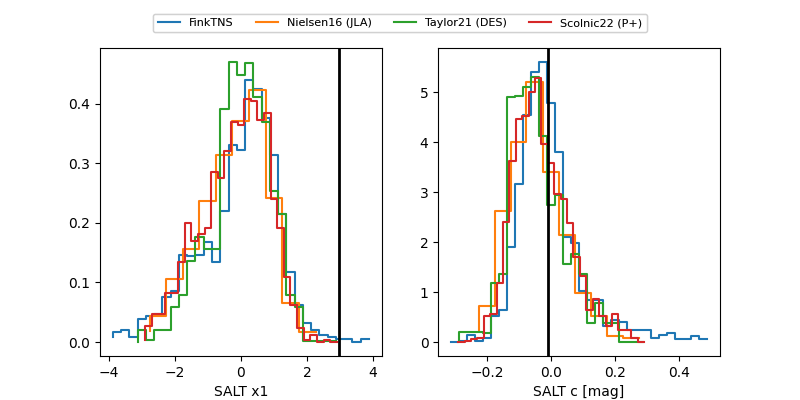

ZTF26aagjsdg
Target ZTF26aagjsdg at 2026-03-01 06:55
Aliases and brokers:
FINK: link
Lasair: link
ALeRCE: link
alt names
ZTF26aagjsdg (ztf,fink_ztf)
Coordinates:
equatorial (ra, dec) = 133.0810,+16.84038
equatorial (HMS+DMS) = 08:52:19.43,+16:50:25.38
galactic (l, b) = (210.2900,+34.11533)
Flags:
Photometry:
last ztfr=20.22
1 ztfr detections
Lightcurve

Visibility


Additional plots
